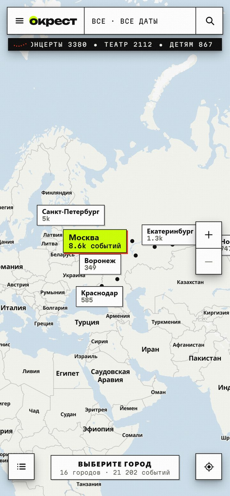

Афиша вокруг тебя — на карте.
Концерты, выставки, спектакли, стендап и кино в 16 городах России. Всё на одной карте — прямо в Telegram.
Открыть в Telegram→20 000+событий
16городов
0₽без рекламы

Как это работает
Открываешь карту — видишь, что вокруг. Сохраняешь — напомним. Без рекламы и левых каналов.

Рядом
Карта показывает, что происходит вокруг тебя — прямо сейчас.

Не пропусти
Где, когда, почём и как добраться. Сохрани — напомним за 2 часа.

Списком
Не любишь карту? Листай и сортируй по дате, цене и близости.